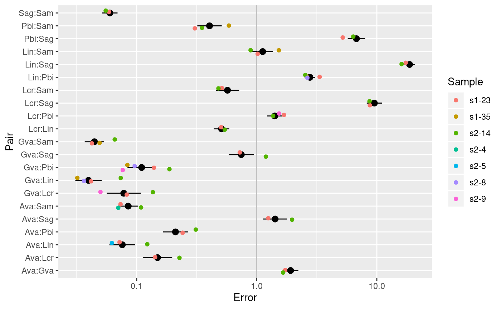
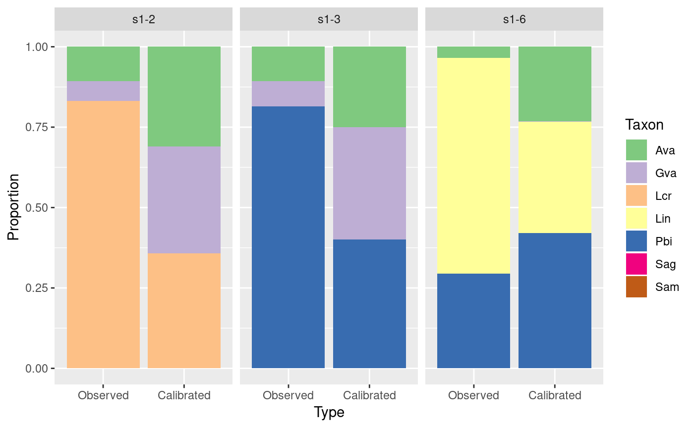
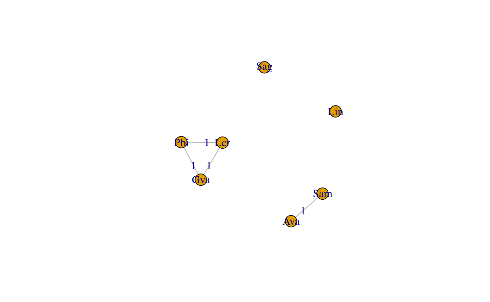
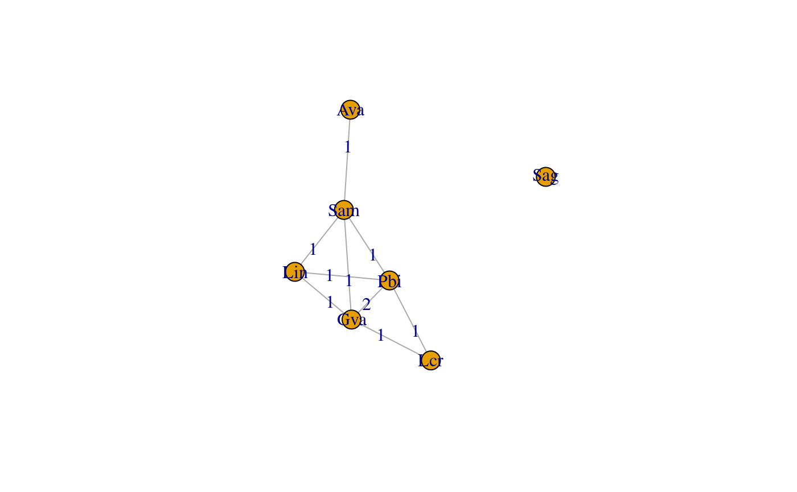

library(tidyverse)
#> Registered S3 methods overwritten by 'ggplot2':
#> method from
#> [.quosures rlang
#> c.quosures rlang
#> print.quosures rlang
#> ── Attaching packages ────────────────────────────────── tidyverse 1.2.1 ──
#> ✔ ggplot2 3.1.1 ✔ purrr 0.3.2
#> ✔ tibble 2.1.3 ✔ dplyr 0.8.3
#> ✔ tidyr 0.8.3 ✔ stringr 1.4.0
#> ✔ readr 1.3.1 ✔ forcats 0.4.0
#> ── Conflicts ───────────────────────────────────── tidyverse_conflicts() ──
#> ✖ dplyr::filter() masks stats::filter()
#> ✖ dplyr::lag() masks stats::lag()
library(metacal)This tutorial goes through the process of estimating bias and performing calibration in the special case where the bias of all the taxa of interest can be directly measured from the control samples. It covers estimating the bias with associated uncertainty from a set of control samples, evaluating the consistency of bias across multiple controls, and using the bias estimate to calibrate samples with unknown composition.
For this tutorial, we will use the data from the cell-mixtures experiment of Brooks et al. (2015), which is included in this package. Each sample is a cellular mock community consisting of an even mixture of one to seven of a set of seven bacterial species. The sample metadata and the observed and actual species abundances are stored as .csv files. The abundances are stored in standard OTU-table format with samples as rows and taxa as columns.
sam <- read_csv(system.file("extdata", "brooks2015-sample-data.csv",
package = "metacal"))
observed <- read_csv(system.file("extdata", "brooks2015-observed.csv",
package = "metacal"))
actual <- read_csv(system.file("extdata", "brooks2015-actual.csv",
package = "metacal"))
sam
#> # A tibble: 80 x 6
#> Sample Plate Barcode Mixture_type Num_species Species_list
#> <chr> <dbl> <dbl> <chr> <dbl> <chr>
#> 1 s1-1 1 1 Cells 3 Lactobacillus_crispatus;P…
#> 2 s1-2 1 2 Cells 3 Gardnerella_vaginalis;Ato…
#> 3 s1-3 1 3 Cells 3 Gardnerella_vaginalis;Ato…
#> 4 s1-4 1 4 Cells 3 Atopobium_vaginae;Lactoba…
#> 5 s1-5 1 5 Cells 2 Gardnerella_vaginalis;Pre…
#> 6 s1-6 1 6 Cells 3 Atopobium_vaginae;Lactoba…
#> 7 s1-7 1 7 Cells 2 Atopobium_vaginae;Strepto…
#> 8 s1-8 1 8 Cells 2 Gardnerella_vaginalis;Str…
#> 9 s1-9 1 9 Cells 3 Atopobium_vaginae;Sneathi…
#> 10 s1-10 1 10 Cells 3 Atopobium_vaginae;Lactoba…
#> # … with 70 more rows
observed
#> # A tibble: 80 x 9
#> Sample Atopobium_vagin… Gardnerella_vag… Lactobacillus_c…
#> <chr> <dbl> <dbl> <dbl>
#> 1 s1-1 1 1 13670
#> 2 s1-10 1028 0 10310
#> 3 s1-11 0 181 3956
#> 4 s1-12 1424 0 0
#> 5 s1-13 0 0 3199
#> 6 s1-14 0 0 9348
#> 7 s1-15 572 0 1
#> 8 s1-16 0 0 1
#> 9 s1-17 2 1 19
#> 10 s1-18 0 865 9892
#> # … with 70 more rows, and 5 more variables: Lactobacillus_iners <dbl>,
#> # Prevotella_bivia <dbl>, Sneathia_amnii <dbl>,
#> # Streptococcus_agalactiae <dbl>, Other <dbl>
actual
#> # A tibble: 80 x 8
#> Sample Atopobium_vagin… Gardnerella_vag… Lactobacillus_c…
#> <chr> <dbl> <dbl> <dbl>
#> 1 s1-1 0 0 0.333
#> 2 s1-10 0.333 0 0.333
#> 3 s1-11 0 0.333 0.333
#> 4 s1-12 0.5 0 0
#> 5 s1-13 0 0 0.333
#> 6 s1-14 0 0 0.5
#> 7 s1-15 0.333 0 0
#> 8 s1-16 0 0 0
#> 9 s1-17 0 0 0
#> 10 s1-18 0 0.5 0.5
#> # … with 70 more rows, and 4 more variables: Lactobacillus_iners <dbl>,
#> # Prevotella_bivia <dbl>, Sneathia_amnii <dbl>,
#> # Streptococcus_agalactiae <dbl>The Other column in observed includes all reads assigned to other species due to contamination or taxonomic misassignment.
The samples contain mixtures of 1, 2, 3, 4, or 7 species,
sam %>%
group_by(Num_species) %>%
count
#> # A tibble: 5 x 2
#> # Groups: Num_species [5]
#> Num_species n
#> <dbl> <int>
#> 1 1 9
#> 2 2 25
#> 3 3 43
#> 4 4 1
#> 5 7 2For this tutorial, we will pick the 4-species sample and two each of the 2-, 3-, and 7-species samples to serve as the control samples that we will use to estimate bias.
controls <- c("s1-23", "s1-35", "s2-4", "s2-5", "s2-8", "s2-9", "s2-14")
sam %>%
filter(Sample %in% controls) %>%
arrange(Num_species)
#> # A tibble: 7 x 6
#> Sample Plate Barcode Mixture_type Num_species Species_list
#> <chr> <dbl> <dbl> <chr> <dbl> <chr>
#> 1 s2-4 2 4 Cells 2 Atopobium_vaginae;Sneathia…
#> 2 s2-5 2 5 Cells 2 Atopobium_vaginae;Lactobac…
#> 3 s2-8 2 8 Cells 3 Gardnerella_vaginalis;Lact…
#> 4 s2-9 2 9 Cells 3 Gardnerella_vaginalis;Lact…
#> 5 s1-35 1 35 Cells 4 Gardnerella_vaginalis;Lact…
#> 6 s1-23 1 23 Cells 7 Gardnerella_vaginalis;Atop…
#> 7 s2-14 2 14 Cells 7 Gardnerella_vaginalis;Atop…
sam <- sam %>%
mutate(Type = ifelse(Sample %in% controls, "Control", ""))
actual <- filter(actual, Sample %in% controls)We’ll also abbreviate the taxa names for greater compactness in R output,
tax_abbrev <- function (taxa) {
m <- str_match(taxa, "([A-Z])[a-z]+_([a-z]{2})[a-z]*")
ifelse(is.na(m[,1]), taxa, paste0(m[,2], m[,3]))
}
colnames(observed)
#> [1] "Sample" "Atopobium_vaginae"
#> [3] "Gardnerella_vaginalis" "Lactobacillus_crispatus"
#> [5] "Lactobacillus_iners" "Prevotella_bivia"
#> [7] "Sneathia_amnii" "Streptococcus_agalactiae"
#> [9] "Other"
tax_abbrev(colnames(observed)[-1])
#> [1] "Ava" "Gva" "Lcr" "Lin" "Pbi" "Sam" "Sag" "Other"
observed <- rename_at(observed, vars(-Sample), tax_abbrev)
actual <- rename_at(actual, vars(-Sample), tax_abbrev)Note: Bias estimation requires that the observed and actual tables use the same taxonomic identifiers, so that we can match the observed and true abundances for each taxon. We’ve already taken care of this in the demonstration data. Real applications may require an extra step to reconcile the taxonomic identifiers output by the bioinformatics pipeline with those in the table of actual compositions.
To estimate bias, we first need to get a matrix with the compositional error between the observed and actual compositions for the control samples. This matrix should have samples corresponding to rows, taxa corresponding to columns, and columns named by the taxa.
First, convert to numeric matrices using the as_matrix() helper function,
observed_mat <- as_matrix(observed, rownames = Sample)
head(observed_mat)
#> Ava Gva Lcr Lin Pbi Sam Sag Other
#> s1-1 1 1 13670 0 7544 1 1506 7
#> s1-10 1028 0 10310 2 1 14947 2 3
#> s1-11 0 181 3956 7598 6 2 0 2
#> s1-12 1424 0 0 1 21708 7 0 8
#> s1-13 0 0 3199 0 1854 6501 0 3
#> s1-14 0 0 9348 2 0 3 1475 10
actual_mat <- as_matrix(actual, rownames = Sample)
actual_mat %>% round(3)
#> Ava Gva Lcr Lin Pbi Sam Sag
#> s1-23 0.143 0.143 0.143 0.143 0.143 0.143 0.143
#> s1-35 0.000 0.250 0.000 0.250 0.250 0.250 0.000
#> s2-14 0.143 0.143 0.143 0.143 0.143 0.143 0.143
#> s2-4 0.500 0.000 0.000 0.000 0.000 0.500 0.000
#> s2-5 0.500 0.000 0.000 0.500 0.000 0.000 0.000
#> s2-8 0.000 0.333 0.000 0.333 0.333 0.000 0.000
#> s2-9 0.000 0.333 0.333 0.000 0.333 0.000 0.000Then, get compatible matrices with just the control samples and taxa, making sure that rows and columns are in the same order,
control_samples <- rownames(actual_mat)
control_taxa <- colnames(actual_mat)
observed_mat <- observed_mat[control_samples, control_taxa]
actual_mat <- actual_mat[control_samples, control_taxa]The final step is to divide the observed by the actual abundances to get the error matrix,
error_mat <- observed_mat / actual_mat
error_mat
#> Ava Gva Lcr Lin Pbi Sam Sag
#> s1-23 2457 1421 17241 34202 10220 33586 1967
#> s1-35 Inf 1068 NaN 33316 12760 21780 Inf
#> s2-14 3577 2156 15792 29225 11536 32949 1813
#> s2-4 2898 NaN Inf Inf Inf 41272 NaN
#> s2-5 1766 NaN NaN 28424 Inf Inf NaN
#> s2-8 NaN 2238 Inf 61653 23298 Inf NaN
#> s2-9 NaN 1473 29616 NaN 19230 NaN NaNThis step can lead to two types of problems. Infinite values (Infs) arise from taxa that have a positive abundance in observed but not in actual. We see several cases of that here. The opposite situation, a taxon with a positive abundance in actual but an abundance of 0 in observed, occurs when taxa present in the controls were not detected. This situation does not occur here but is likely to occur in control samples with low-frequency or low-efficiency taxa and low sequencing depths. In contrast, the NaNs we see are fine: these are caused by dividing 0/0 and reflect taxa that are neither observed nor actually present in the control. To ensure that we have no Infs or 0s in the error matrix, we can add a pseudocount (or apply another zero-removal strategy) to the observed matrix and “mask” (set to 0) the observations of taxa not in actual,
and then compute the error matrix as before,
error_mat <- observed_mat0 / actual_mat
error_mat
#> Ava Gva Lcr Lin Pbi Sam Sag
#> s1-23 2460.5 1424.5 17244.5 34205.5 10223.5 33589.5 1970.5
#> s1-35 NaN 1070.0 NaN 33318.0 12762.0 21782.0 NaN
#> s2-14 3580.5 2159.5 15795.5 29228.5 11539.5 32952.5 1816.5
#> s2-4 2899.0 NaN NaN NaN NaN 41273.0 NaN
#> s2-5 1767.0 NaN NaN 28425.0 NaN NaN NaN
#> s2-8 NaN 2239.5 NaN 61654.5 23299.5 NaN NaN
#> s2-9 NaN 1474.5 29617.5 NaN 19231.5 NaN NaN
# Check that all entries either between 0 and Infinity, or NaN
error_mat %>%
{(is.finite(.) & (. > 0)) | is.nan(.)} %>%
all
#> [1] TRUEBecause we treat the abundances and the error as compositional vectors, there is no need to normalize the abundances to proportions before or after computing the error.
First, we combine the observed and actual compositions into a single “tidy” data frame, where each row corresponds to an individual (sample, taxon) observation,
observed.tidy <- observed %>%
gather("Taxon", "Observed", -Sample)
actual.tidy <- actual %>%
gather("Taxon", "Actual", -Sample)
joint <- actual.tidy %>%
left_join(observed.tidy, by = c("Sample", "Taxon"))
head(joint)
#> # A tibble: 6 x 4
#> Sample Taxon Actual Observed
#> <chr> <chr> <dbl> <dbl>
#> 1 s1-23 Ava 0.143 351
#> 2 s1-35 Ava 0 1
#> 3 s2-14 Ava 0.143 511
#> 4 s2-4 Ava 0.5 1449
#> 5 s2-5 Ava 0.5 883
#> 6 s2-8 Ava 0 0The left_join operation only keeps taxa that are in actual, which in this case is just the 7 mock species.
Before proceeding, we will add a pseudocount to the observed read counts and filter reads from taxa that are not actually in the control samples (to avoid Infs and 0s in our error matrix, as discussed above),
joint <- joint %>%
mutate(Observed0 = (Observed + 0.5) * (Actual > 0))
head(joint)
#> # A tibble: 6 x 5
#> Sample Taxon Actual Observed Observed0
#> <chr> <chr> <dbl> <dbl> <dbl>
#> 1 s1-23 Ava 0.143 351 352.
#> 2 s1-35 Ava 0 1 0
#> 3 s2-14 Ava 0.143 511 512.
#> 4 s2-4 Ava 0.5 1449 1450.
#> 5 s2-5 Ava 0.5 883 884.
#> 6 s2-8 Ava 0 0 0Next, we compute the compositional error by dividing the observed abundance by the actual abundance,
Because we treat the abundances and the error as compositional vectors, there is no need to normalize the abundances to proportions before or after computing the error. Finally, we get a matrix of the errors using the build_matrix() helper function,
error_mat0 <- build_matrix(joint, Sample, Taxon, Error)This error matrix is the same we obtained by Approach 1, except that the row and column orders may differ.
Next, we estimate the bias as the compositional mean, or center, of the errors in the control samples. We do this with the center() function, which computes the center of a set of compositional vectors that are stored as a matrix. By default, center() returns a named vector,
center(error_mat)
#> Ava Gva Lcr Lin Pbi Sam Sag
#> 0.3423578 0.1789953 2.2954367 4.5106106 1.6271050 4.0254117 0.2406311For many purposes it is more useful to obtain a data frame,
bias <- center(error_mat, enframe = TRUE) %>%
rename(Bhat = Center)
bias
#> # A tibble: 7 x 2
#> Taxon Bhat
#> <chr> <dbl>
#> 1 Ava 0.342
#> 2 Gva 0.179
#> 3 Lcr 2.30
#> 4 Lin 4.51
#> 5 Pbi 1.63
#> 6 Sam 4.03
#> 7 Sag 0.241We can get the pairwise bias with compute_ratios(),
bias.pw <- bias %>%
compute_ratios(group_vars = c()) %>%
mutate(Pair = paste(Taxon.x, Taxon.y, sep = ":"))
bias.pw
#> # A tibble: 49 x 4
#> Taxon.x Taxon.y Bhat Pair
#> <chr> <chr> <dbl> <chr>
#> 1 Ava Ava 1 Ava:Ava
#> 2 Ava Gva 1.91 Ava:Gva
#> 3 Ava Lcr 0.149 Ava:Lcr
#> 4 Ava Lin 0.0759 Ava:Lin
#> 5 Ava Pbi 0.210 Ava:Pbi
#> 6 Ava Sag 1.42 Ava:Sag
#> 7 Ava Sam 0.0850 Ava:Sam
#> 8 Gva Ava 0.523 Gva:Ava
#> 9 Gva Gva 1 Gva:Gva
#> 10 Gva Lcr 0.0780 Gva:Lcr
#> # … with 39 more rowsThe bootrep_center function can be used to estimate uncertainty in the estimated bias,
bootreps <- bootrep_center(error_mat) %>%
rename(Bhat = Center)
bootreps.summary <- bootreps %>%
group_by(Taxon) %>%
summarize(Gm_mean = gm_mean(Bhat), Gm_se = gm_sd(Bhat))
bias0 <- left_join(bias, bootreps.summary, by = "Taxon")
bias0
#> # A tibble: 7 x 4
#> Taxon Bhat Gm_mean Gm_se
#> <chr> <dbl> <dbl> <dbl>
#> 1 Ava 0.342 0.340 1.08
#> 2 Gva 0.179 0.179 1.09
#> 3 Lcr 2.30 2.31 1.08
#> 4 Lin 4.51 4.50 1.05
#> 5 Pbi 1.63 1.63 1.07
#> 6 Sam 4.03 4.02 1.06
#> 7 Sag 0.241 0.241 1.05By converting the bootstrap estimates to pairwise estimates, we can also get standard errors for the pairwise bias,
bootreps.pw <- bootreps %>%
compute_ratios(group_vars = ".id")
summary.pw <- bootreps.pw %>%
group_by(Taxon.x, Taxon.y) %>%
summarize(Gm_mean = gm_mean(Bhat), Gm_se = gm_sd(Bhat))
bias.pw0 <- left_join(bias.pw, summary.pw, by = c("Taxon.x", "Taxon.y"))
bias.pw0
#> # A tibble: 49 x 6
#> Taxon.x Taxon.y Bhat Pair Gm_mean Gm_se
#> <chr> <chr> <dbl> <chr> <dbl> <dbl>
#> 1 Ava Ava 1 Ava:Ava 1 1
#> 2 Ava Gva 1.91 Ava:Gva 1.90 1.08
#> 3 Ava Lcr 0.149 Ava:Lcr 0.147 1.16
#> 4 Ava Lin 0.0759 Ava:Lin 0.0756 1.13
#> 5 Ava Pbi 0.210 Ava:Pbi 0.208 1.13
#> 6 Ava Sag 1.42 Ava:Sag 1.41 1.12
#> 7 Ava Sam 0.0850 Ava:Sam 0.0847 1.10
#> 8 Gva Ava 0.523 Gva:Ava 0.526 1.08
#> 9 Gva Gva 1 Gva:Gva 1 1
#> 10 Gva Lcr 0.0780 Gva:Lcr 0.0776 1.18
#> # … with 39 more rowsPlotting the bias estimate against the observed errors is useful to get a sense of the strength of bias versus noise in the control measurements were and how precisely the bias is estimated. When the control samples vary in their actual compositions, such plots can also allow us to confirm that the bias remains consistent across samples with different compositions. Since bias acts consistently on taxon ratios, and different control samples can have different taxa, we plot the error in the ratios for each pair of taxa over the samples where that pair was observed.
First, we get a data frame with the observed errors using the compute_ratios() function, and a data frame with the predicted ratios from the pairwise bias estimates (with standard errors) we found earlier,
ratios <- joint %>%
compute_ratios %>%
mutate(Pair = paste(Taxon.x, Taxon.y, sep = ":")) %>%
filter(!is.nan(Error), Taxon.x < Taxon.y)
ratios.pred <- bias.pw0 %>%
mutate(Pair = paste(Taxon.x, Taxon.y, sep = ":")) %>%
filter(Taxon.x < Taxon.y)Next, we plot the observed error along with the estimated bias (multiplied and divided by two geometric standard errors),
ggplot(ratios, aes(Pair, Error, color = Sample)) +
geom_hline(yintercept = 1, color = "grey") +
geom_pointrange(data = ratios.pred, aes(y = Bhat,
ymin = Bhat / Gm_se^2, ymax = Bhat * Gm_se^2),
color = "black") +
geom_jitter(width = 0.2) +
scale_y_log10() +
coord_flip()
Next, we use the bias estimated from the control samples to calibrate the relative abundances in the non-control samples, according to Equation (9) of the manuscript. To illustrate how to apply calibration when we were only able to estimate bias for a subset of the observed taxa, we treat the Other taxonomic category as if it were an 8th species that we observed in the target samples but that was not in the controls.
First, get a matrix version of the observed compositions with all samples, not just the controls;
observed_mat <- as_matrix(observed, rownames = Sample)Next, get a vector of the estimated bias, ensuring that taxa are in the same order as in the observed matrix,
bias_vec <- bias %>% deframe
bias_vec <- bias_vec[colnames(observed_mat)]
bias_vec
#> Ava Gva Lcr Lin Pbi Sam Sag
#> 0.3423578 0.1789953 2.2954367 4.5106106 1.6271050 4.0254117 0.2406311
#> <NA>
#> NANote that any taxa in observed but not in bias have a value of NA in bias_vec. Finally, get a matrix with the calibrated compositions by dividing the observed compositions by the bias,
calibrated_mat <- sweep(observed_mat, 2, bias_vec, "/")
head(calibrated_mat) %>% round(2)
#> Ava Gva Lcr Lin Pbi Sam Sag Other
#> s1-1 2.92 5.59 5955.29 0.00 4636.46 0.25 6258.54 NA
#> s1-10 3002.71 0.00 4491.52 0.44 0.61 3713.16 8.31 NA
#> s1-11 0.00 1011.20 1723.42 1684.47 3.69 0.50 0.00 NA
#> s1-12 4159.39 0.00 0.00 0.22 13341.49 1.74 0.00 NA
#> s1-13 0.00 0.00 1393.63 0.00 1139.45 1614.99 0.00 NA
#> s1-14 0.00 0.00 4072.43 0.44 0.00 0.75 6129.72 NAAny measured taxa for which bias was not estimated cannot be calibrated, and so have calibrated values of NA. We can compute calibrated proportions for the subcompositions on just the control taxa with
calibrated_mat0 <- calibrated_mat[, control_taxa]
totals <- apply(calibrated_mat0, 1, sum)
calibrated_mat.prop <- sweep(calibrated_mat0, 1, totals, "/")
head(calibrated_mat.prop) %>% round(3)
#> Ava Gva Lcr Lin Pbi Sam Sag
#> s1-1 0.000 0.000 0.353 0.000 0.275 0.000 0.371
#> s1-10 0.268 0.000 0.400 0.000 0.000 0.331 0.001
#> s1-11 0.000 0.229 0.390 0.381 0.001 0.000 0.000
#> s1-12 0.238 0.000 0.000 0.000 0.762 0.000 0.000
#> s1-13 0.000 0.000 0.336 0.000 0.275 0.389 0.000
#> s1-14 0.000 0.000 0.399 0.000 0.000 0.000 0.601Get a tidy data frame with the observed compositions and the bias
cal <- observed.tidy %>%
left_join(bias, by = "Taxon")
cal %>% filter(Sample == "s1-1")
#> # A tibble: 8 x 4
#> Sample Taxon Observed Bhat
#> <chr> <chr> <dbl> <dbl>
#> 1 s1-1 Ava 1 0.342
#> 2 s1-1 Gva 1 0.179
#> 3 s1-1 Lcr 13670 2.30
#> 4 s1-1 Lin 0 4.51
#> 5 s1-1 Pbi 7544 1.63
#> 6 s1-1 Sam 1 4.03
#> 7 s1-1 Sag 1506 0.241
#> 8 s1-1 Other 7 NACalibrate each sample by dividing the observed abundance by the bias,
cal <- cal %>%
mutate(Calibrated = Observed / Bhat)
cal %>% filter(Sample == "s1-1")
#> # A tibble: 8 x 5
#> Sample Taxon Observed Bhat Calibrated
#> <chr> <chr> <dbl> <dbl> <dbl>
#> 1 s1-1 Ava 1 0.342 2.92
#> 2 s1-1 Gva 1 0.179 5.59
#> 3 s1-1 Lcr 13670 2.30 5955.
#> 4 s1-1 Lin 0 4.51 0
#> 5 s1-1 Pbi 7544 1.63 4636.
#> 6 s1-1 Sam 1 4.03 0.248
#> 7 s1-1 Sag 1506 0.241 6259.
#> 8 s1-1 Other 7 NA NAAny measured taxa for which bias was not estimated cannot be calibrated, and so have calibrated values of NA. We can compute calibrated proportions for the subcompositions on just the control taxa with
cal.prop <- cal %>%
filter(Taxon %in% control_taxa) %>%
group_by(Sample) %>%
mutate_at(vars(Observed, Calibrated), ~ . / sum(.))
cal.prop %>% filter(Sample == "s1-1")
#> # A tibble: 7 x 5
#> # Groups: Sample [1]
#> Sample Taxon Observed Bhat Calibrated
#> <chr> <chr> <dbl> <dbl> <dbl>
#> 1 s1-1 Ava 0.0000440 0.342 0.000173
#> 2 s1-1 Gva 0.0000440 0.179 0.000331
#> 3 s1-1 Lcr 0.602 2.30 0.353
#> 4 s1-1 Lin 0 4.51 0
#> 5 s1-1 Pbi 0.332 1.63 0.275
#> 6 s1-1 Sam 0.0000440 4.03 0.0000147
#> 7 s1-1 Sag 0.0663 0.241 0.371In the Brooks dataset, each sample was constructed to be an even mixture of the chosen subset of species. Let’s check the effects of calibration on the estimated proportiosn for three of the 3-species samples.
samples <- c("s1-6", "s1-2", "s1-3")
plot_df <- cal.prop %>%
filter(Sample %in% samples) %>%
gather("Type", "Proportion", "Observed", "Calibrated") %>%
mutate(Type = factor(Type, c("Observed", "Calibrated")))
ggplot(plot_df, aes(Type, Proportion, fill = Taxon)) +
geom_col() +
facet_wrap(~Sample) +
scale_fill_brewer(type = "qual")
The plot shows that the calibrated proportions are much closer to the nominally correct proportions of (0.33, 0.33, 0.33). Also, note that the proportion of Prevotella bivia (Pbi) is correctly calibrated downward in Sample “s1-3” but upward in proportion in Sample “s1-6”.
To fully estimate the bias of all taxa requires each taxon to appear in at least one control sample and that there is sufficient taxonomic overlap among the controls. A detailed explanation of this idea is given in the Appendix 2 of the manuscript; however, the basic principle can be easily understood with a few examples.
Suppose that rather than the 7 control samples we used earlier, we had only measured samples “s2-9” and “s2-4”.
error_mat1 <- error_mat[c("s2-9", "s2-4"), ]
error_mat1
#> Ava Gva Lcr Lin Pbi Sam Sag
#> s2-9 NaN 1474.5 29617.5 NaN 19231.5 NaN NaN
#> s2-4 2899 NaN NaN NaN NaN 41273 NaNNote that there are two taxa, “Lin” and “Sag”, that do not appear in either control sample, and so we won’t be able to estimate their efficiencies relative to the other taxa. However, we also have a problem if we wish to be able to estimate the bias of the 5 remaining taxa, due to the lack of taxonomic overlap between the two samples,
# List the taxa present in each sample
apply(error_mat1, 1, function(x) x[!is.nan(x)] %>% names)
#> $`s2-9`
#> [1] "Gva" "Lcr" "Pbi"
#>
#> $`s2-4`
#> [1] "Ava" "Sam"For a given control sample, it is only possible to measure the relative efficiencies between the taxa in that sample, and we have no way to measure the relative efficiencies between the two groups of taxa in this case. There are infinitely many possible estimates of the bias that are equally consistent with the data, which maintain the ratios between taxa in the two groups but have different ratios between the groups. As a result, the center() function will give an error when called with its default arguments in this case,
center(error_mat1)
#> Error in center(error_mat1): The center is not fully determinedHowever, because it is still useful to be able to estimate the bias within each group (or component), the center() function takes an argument, components, that lets us get a bias estimate anyways.
center(error_mat1, components = TRUE) %>%
arrange(Component)
#> # A tibble: 7 x 3
#> Taxon Center Component
#> <chr> <dbl> <dbl>
#> 1 Ava 0.265 1
#> 2 Sam 3.77 1
#> 3 Gva 0.156 2
#> 4 Lcr 3.14 2
#> 5 Pbi 2.04 2
#> 6 Lin 1 3
#> 7 Sag 1 4The Component column gives the component of the taxon co-occurrence graph, which indicates the groups of taxa within which the bias was estimated.
To help examine the co-occurrence structure ahead of time, we offer several helper functions with the form cooccurrence_*(). In particular, you can view the co-occurrence network with
g <- cooccurrence_network(error_mat1)
plot(g, edge.label=round(igraph::E(g)$weight, 3))
The edge labels indicate the number of samples in which the pair of taxa co-occur.
Now suppose that we had also measured sample “s1-35” in addition to “s2-9” and “s2-4”.
error_mat2 <- error_mat[c("s2-9", "s2-4", "s1-35"), ]
error_mat2
#> Ava Gva Lcr Lin Pbi Sam Sag
#> s2-9 NaN 1474.5 29617.5 NaN 19231.5 NaN NaN
#> s2-4 2899 NaN NaN NaN NaN 41273 NaN
#> s1-35 NaN 1070.0 NaN 33318 12762.0 21782 NaN
apply(error_mat2, 1, function(x) x[!is.nan(x)] %>% names)
#> $`s2-9`
#> [1] "Gva" "Lcr" "Pbi"
#>
#> $`s2-4`
#> [1] "Ava" "Sam"
#>
#> $`s1-35`
#> [1] "Gva" "Lin" "Pbi" "Sam"This sample contains one of the previously missing taxa, “Lin”. More interestingly, it contains at least one taxon from each group of taxa contained in first two samples. This information linking the bias between the two groups allows us to obtain an estimate of the bias for all 6 taxa in the three controls, which we can confirm from the co-occurrence network,
g <- cooccurrence_network(error_mat2)
plot(g, edge.label = igraph::E(g)$weight)
Because the 7th taxon is still missing, we still need to use the components = TRUE option when estimating the bias,
center(error_mat2, components = TRUE) %>%
arrange(Component)
#> # A tibble: 7 x 3
#> Taxon Center Component
#> <chr> <dbl> <dbl>
#> 1 Ava 0.186 1
#> 2 Gva 0.127 1
#> 3 Lcr 2.50 1
#> 4 Lin 4.05 1
#> 5 Pbi 1.58 1
#> 6 Sam 2.65 1
#> 7 Sag 1 2